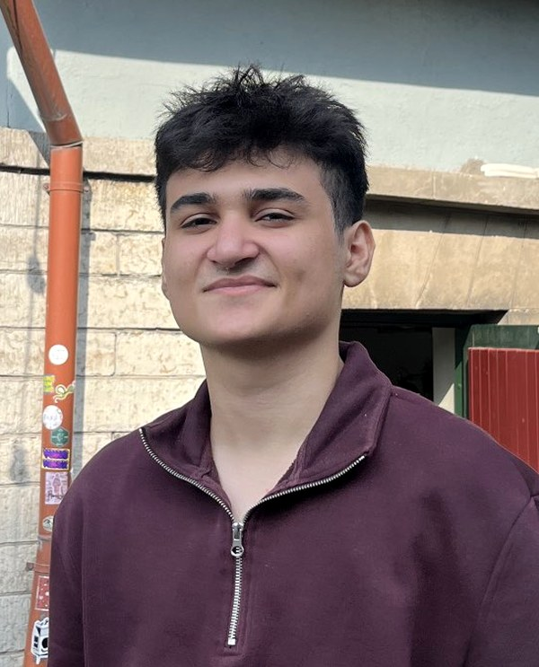

Computer Engineering student at ASOIU and graduate of the Div Academy AI Engineering program (1st Degree Diploma). I build AI systems end to end: retrieval and semantic search pipelines, multi-agent backends, ML models and the APIs around them, on Python, FastAPI, PostgreSQL with pgvector and Docker. Every project is measured against a labeled benchmark or baseline. Open to AI engineering roles.
Compares a CV with a job description and returns a 0–100 score with every point explained. Personal data is removed before any model call; the LLM only extracts, Python scores. Passes 33 of 34 labeled cases.
Finds movies, series, songs, books, games and actors from half-remembered descriptions. Hybrid retrieval, cross-encoder reranking and LLM reasoning lift top-1 accuracy from 54% to 92% on a 48-query benchmark.
Four agents plan a trip together: Interest proposes places, Budget and Logistics object when the plan breaks the budget or schedule, Planner builds the timed route. The negotiation streams live over SSE onto a map.
Nine-agent platform that estimates the total real cost, scholarship eligibility, net cost after aid and an application plan. The LLM handles language, Python handles every number, and each figure cites its source.
Predicts 7 policy options at once from quote-journey logs. Tuned XGBoost reaches 92.54% against the 92.48% last-quote baseline and beats it on 6 of 7 options.
Algorithms, computer architecture, ML fundamentals, software engineering. Full scores (50/50) in C++, HTML and CSS.
8 months on a 100% scholarship (“Future Programmers”): ML, deep learning, computer vision, RAG and AI agents.
10 months: mathematics for AI (linear algebra, calculus, probability and statistics), then AI systems engineering.
Kaggle — Intermediate Machine Learning, Intro to Machine Learning, Python, Pandas, Data Visualization
HackerRank — SQL (Advanced), SQL (Intermediate), SQL (Basic), Python (Basic), Problem Solving (Basic)
Every certificate, project and diagram: khayaliszade.com